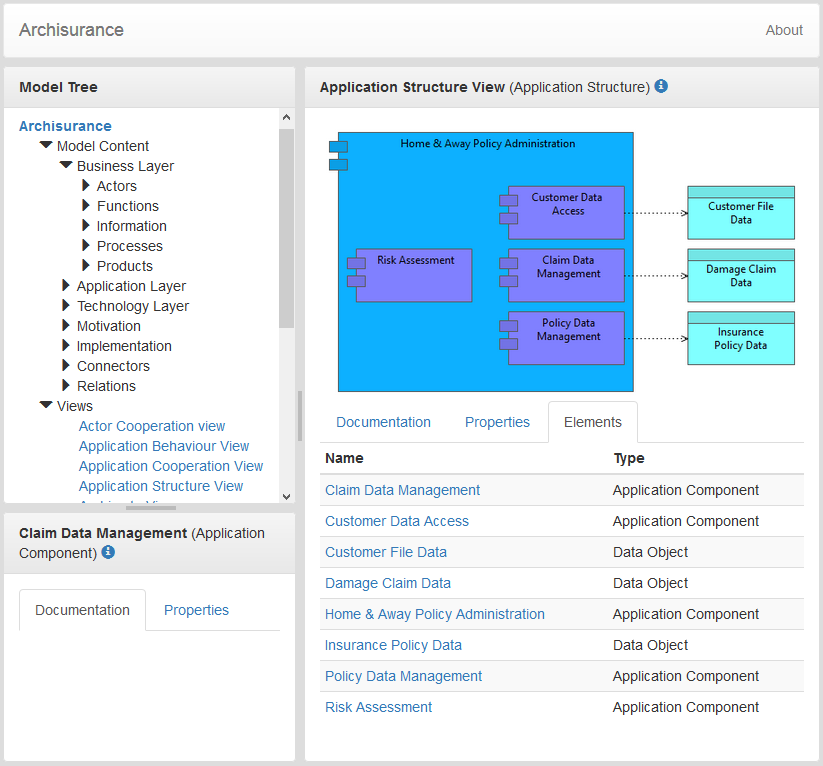

Archi supports web-based reporting functionality by means of generating HTML pages containing a model tree, summary tables of the model objects and the Views in a model.
This option is available from the "Report->HTML..." menu item from the main "File" menu. Once a model is selected in the Model Tree or in a View this menu item is enabled. Select a folder to export the model and its Views.
A single HTML page, "index.html" is generated in the chosen output folder, together with supporting files and image files for the Views in the model.
A generated HTML Report
Clicking on the magnify icon at the top of the navigation tree reveals a search box which makes it possible to filter the content of the tree.
It is possible to zoom the view's diagram by using the zoom slider (or the +/- icons) located on the far right of the view's header.
Any folder, concept, or view in the model can be hidden from the HTML report by adding a property in the model object named _hide_from_export_ with a value of true. When hiding a folder, all of its content will be hidden as well.
Note: hidden objects are still exported and accessible by their direct/permanent URL, but they are removed from the navigation tree and the search feature.
The "Query" tab in the report allows you to query the model contents of the report using SQL. For more information see the Archi Wiki.